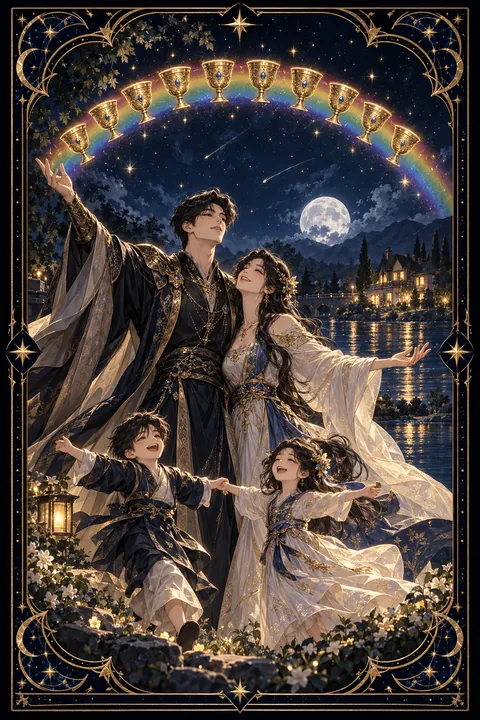

컵 10 카드 — 가족과 함께하는 행복
컵 10 카드 한눈에 보기
컵 10 카드 상징 읽기

동네보살의 카드 그림은 전통 라이더–웨이트 덱의 뜻을 새 그림으로 옮긴 것입니다. 아래 상징 설명은 전통 덱의 그림을 기준으로 합니다.
하늘에 걸린 무지개를 따라 열 개의 잔이 아치 모양으로 늘어서 있습니다. 비가 그친 뒤 뜨는 무지개는 시련 끝에 찾아오는 약속과 축복을 상징합니다.
그 아래 한 쌍의 부부가 서로를 감싸 안고 한 팔을 하늘로 들어 올려 기쁨을 표현합니다. 곁에서 손을 잡고 춤추는 두 아이는 다음 세대로 이어지는 행복과 순수한 즐거움을 나타냅니다.
멀리 보이는 아담한 집은 안정된 가정과 돌아갈 곳을 뜻합니다. 집 앞을 굽이쳐 흐르는 강물은 끊이지 않고 흐르는 감정의 풍요를, 푸른 들판과 나무는 자라나는 생명력을 보여 줍니다.
이 카드의 인물들은 잔을 손에 들고 있지 않습니다. 행복이 소유가 아니라 함께 나누는 감정 속에 있다는 점을 말해 주는 장면입니다. 밝은 하늘과 푸른 초원은 폭풍이 지나간 뒤의 평화를 뜻하며 이 장면이 잠깐의 기쁨이 아니라 오래 이어질 안정임을 보여 줍니다.
컵 10 카드 정방향 뜻
정방향 컵 10은 감정적인 충만함과 가정의 화목이 완성되는 카드입니다. 사랑하는 사람들과 함께하는 평범한 일상이 가장 큰 행복이라는 사실을 일깨워 줍니다. 가족 관계가 좋아지고 오래 바라던 안정감이 찾아오는 흐름입니다.
결혼, 이사, 새 가족 구성원처럼 가정에 관련된 반가운 소식이 있을 수 있습니다. 서먹했던 식구와 화해하거나 오랜 친구들과 다시 가까워지는 일도 이 카드의 기운에 속합니다.
지금은 성취보다 관계에 시간을 쓰는 것이 더 큰 보람을 줍니다. 함께 식사하거나 여행을 계획하는 등 소중한 사람들과의 추억을 만드는 데 마음을 쏟아 보세요. 행복은 크게 기다리는 것이 아니라 오늘 곁에 있는 사람들과 나누는 순간 속에서 완성됩니다. 감사한 마음을 말로 표현하는 것만으로도 집 안의 공기가 달라집니다.
컵 10 카드 역방향 뜻
역방향 컵 10은 겉으로는 화목해 보이지만 속으로는 서로 엇갈린 가정의 모습을 보여 줍니다. 가족마다 바라는 행복의 형태가 달라 갈등이 생기거나 남들에게 보여 주기 위한 화목을 유지하느라 지쳐 있을 수 있습니다.
이상적인 가족이나 연애를 향한 기대가 너무 높아 현실에 실망하는 흐름으로 읽기도 합니다. 명절이나 가족 행사가 부담스럽게 느껴지거나 집에서 편히 쉬지 못하는 느낌이 들 수 있습니다.
이 카드는 완벽한 그림을 내려놓으라고 조언합니다. 모든 가족이 같은 모양의 행복을 가질 필요는 없습니다. 서로에게 바라는 것을 솔직하게 나누고 작은 오해부터 풀어 가면 흔들리던 관계가 다시 자리를 잡습니다. 대화가 어렵다면 식사 한 끼를 함께하는 것부터 시작해 보세요.
연애에서 컵 10 카드
솔로라면 가벼운 만남보다 오래 함께할 사람을 만나고 싶은 마음이 커지는 시기입니다. 가치관과 생활 방식이 잘 맞는 인연이 나타날 가능성이 있으며 지인이나 가족의 소개로 좋은 만남이 이어질 수도 있습니다.
교제 중인 두 사람에게는 사이가 한층 무르익는 흐름입니다. 결혼이나 동거처럼 미래를 함께 설계하는 이야기가 자연스럽게 오갈 수 있습니다. 양가 어른께 인사를 드리거나 함께 살 집을 그려 보기에도 좋은 때입니다. 이미 결혼한 사이라면 일상의 소소한 행복을 누리며 유대감이 더 단단해집니다. 다만 행복한 그림을 지키려고 불만을 숨기지는 마세요. 작은 서운함을 그때그때 나누는 것이 오래가는 관계의 비결입니다. 가족과 친구들의 축복 속에서 관계가 자리 잡는 모습도 이 카드가 그리는 장면입니다. 함께 그리는 미래가 같을수록 작은 갈등도 쉽게 넘어갑니다.
재회·속마음 질문에서 컵 10 카드
재회 질문에서 컵 10이 나오면 서로가 원하던 따뜻한 관계로 돌아갈 수 있다는 희망적인 신호입니다. 상대 역시 함께했던 편안한 시간을 마음 한구석에 소중히 남겨 두었을지 모릅니다. 서두르지 말고 편안한 자리에서 차 한잔으로 시작해 보세요. 다만 과거로 돌아가는 것이 아니라 두 사람이 함께 그릴 앞날의 모습에 뜻이 모여야 관계가 오래 이어집니다. 다시 만난다면 결혼이나 생활 방식처럼 미래에 관한 기대를 초반에 솔직하게 맞춰 보는 것이 좋습니다. 주변 사람들의 응원이 재회를 돕는 흐름도 있습니다. 카드가 뒤집혀 나왔다면 서로 바라는 미래가 달라 헤어졌을 수 있으니 그 차이를 먼저 확인해 보세요.
일·금전에서 컵 10 카드
일과 직장에서는 팀 분위기가 좋아지고 동료들과 한 식구처럼 협력하는 흐름입니다. 함께 이룬 성과를 나누며 보람을 느끼기 좋고 일과 삶의 균형이 잡히는 시기이기도 합니다. 가족을 위해 근무 형태를 조정하거나 집에서 가까운 일터를 찾는 선택도 좋은 결과로 이어질 수 있습니다.
금전 면에서는 가계가 안정되는 흐름입니다. 가족과 함께 목표를 세워 저축하거나 여행 자금을 모으면 동기부여가 커집니다. 큰 지출을 앞두고 있다면 식구들과 충분히 의논한 뒤 결정하세요. 동료의 경조사를 챙기거나 작은 감사 인사를 건네는 일이 뜻밖에 좋은 평판으로 돌아옵니다. 일에서 얻은 여유를 가족과 나누는 데 쓰면 두 영역이 함께 단단해집니다.
컵 10 카드는 예일까 아니오일까
감정적인 성취와 화목의 완성을 뜻하는 카드여서 관계나 가정에 관한 질문에는 분명한 예로 봅니다. 역방향이라면 서로의 기대를 먼저 맞춰야 한다는 뜻이 되어 조건부로 읽습니다.
자주 묻는 질문
컵 10 카드 역방향은 나쁜 뜻인가요?
역방향 컵 10은 겉으로는 화목해 보이지만 속으로는 서로 엇갈린 가정의 모습을 보여 줍니다. 가족마다 바라는 행복의 형태가 달라 갈등이 생기거나 남들에게 보여 주기 위한 화목을 유지하느라 지쳐 있을 수 있습니다.
컵 10 카드가 연애 질문에 나오면요?
솔로라면 가벼운 만남보다 오래 함께할 사람을 만나고 싶은 마음이 커지는 시기입니다. 가치관과 생활 방식이 잘 맞는 인연이 나타날 가능성이 있으며 지인이나 가족의 소개로 좋은 만남이 이어질 수도 있습니다.
타로 카드는 어떻게 뽑나요?
타로 카드 페이지에서 78장을 섞으면 그중 22장이 펼쳐집니다. 마음이 가는 세 장을 고르면 과거·현재·미래 자리에 놓이고, 한 장씩 뒤집어 자리와 방향에 맞는 풀이를 읽습니다. 정방향과 역방향은 섞는 순간 정해집니다.